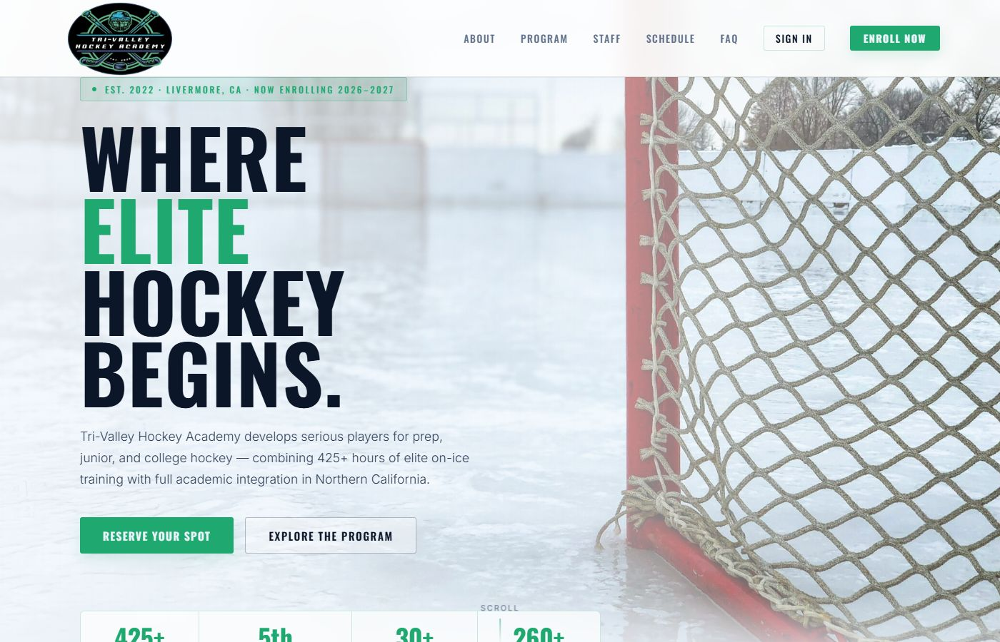

Project · live, in daily use
Family & staff portal
A parent marks their skater absent for next Tuesday, a coach posts a video note on a skill, and the office imports its roster spreadsheet — in one portal I built for a youth hockey academy.
01 — The role boundary
Four roles, and how far each one can see
The portal’s four roles and what each one can reach, drawn across a boundary line: the nearest ground is the family, the furthest is the maintainer’s console, and every vermilion line is an edge a role cannot cross.
-
Maintainer
One reach
One console for failed sign-ins, dead reset links and server errors. No family material at all.
- Maintainer console
-
Staff
Seven reaches
The whole academy: attendance across families, the notes they write, the roster import, the draft board, the on-ice work and the tasks it hands out.
- Every family’s attendance
- Coach notes on a skill
- Messages, read-tracked
- Roster import
- Draft board
- On-ice work
- Tasks for players and parents
-
Student
Four reaches
Their own view of the same material — the attendance that concerns them, the notes written about their skills, what they should be drilling on the ice and the tasks set for them.
- Their own attendance
- Coach notes on a skill
- Their on-ice work
- Their own tasks
-
Parent
Five reaches
Sees their own family. Marks a skater absent for a date, reads the coach’s note on a skill and can reply with a question, follows the on-ice work and ticks off their skater’s tasks.
- Their own attendance
- Coach notes on a skill
- Messages, read-tracked
- Their skater’s on-ice work
- Their skater’s tasks
A request from Family A’s parent for Family B’s record stops at the boundary. That leak is planted in the test suite on purpose, and the tests run without a database, so the boundary is checked on every change rather than in a live system.
02 — The product
What it does, and how it holds
What it does
- Separate views for parents, students, staff and a maintainer.
- Attendance with recurring absences and locked past dates, on one calendar with academy events.
- Coach notes on skills, with video compressed in the browser before upload; if a clip cannot be shrunk, the original is sent instead. Families can reply with a question.
- Messages with read tracking and PDF or other file attachments, a full message history for parents, plus notifications.
- Tasks written once for players, parents or both, with an optional due date, sent to everyone, a group or picked players. Whoever has to do it gets the email and the bell.
- Roster import from the office spreadsheet, and invite emails one at a time or all at once.
- A draft board that splits the night’s skaters into two teams by drag and drop, or by Randomize, a new random split each press.
- On-ice work: what each skater should be drilling, with clips. Parents and players each see only their own skater’s, and a new item emails the family.
- A card under the sign-in box counts up the hours on the ice this season, worked out from the academy calendar: each academy day adds 2.5 hours, days off excluded.
How it’s built
- Backups you can restore. Daily off-site backups alert if one fails or stops. A restore drill matched all 16 tables row for row, and the restore tool refuses to point at production.
- Role boundaries under test. The tests run without a database and catch a deliberately planted cross-family leak.
- Safe roster import. Preview and commit are separate endpoints, so a preview can never send an email. Invites are off by default, and every send asks first.
- Migrations on every deploy, after the migration history was rebuilt from a clean baseline.
- Email that lands. SPF and DKIM both pass, sent from a branded subdomain.
- A maintainer console that logs failed sign-ins, dead reset links and server errors.
- Notices scoped to the person. Each login keeps its own newest 50, so a task sent to the whole academy cannot push another family’s notices out, and a parent-only task never rings the player’s login.
- A frosted-glass restyle of every screen, written as a separate CSS layer with no behaviour changes, and the browser’s own pop-ups replaced with the portal’s.
The on-ice work module — what each skater should be drilling — shipped admin-only on 16 September 2026. It was switched on for parents and players on 22 September, and families have been emailed about new items since 27 September.
- Built
- 16 Jul – 8 Oct 2026, 12 weeks
- Commits
- 210
- Code
- ~44k lines of TypeScript, 25 SQL migrations
- Shape
- 23 data models, ~108 API endpoints, 33 screens
- Roles
- Parents, students, staff and a maintainer
- Built with
- Vite and TypeScript with no framework, Express, Prisma, PostgreSQL, Railway, Brevo, Cloudflare R2, GitHub Actions
03 — The public site
The website in front of it
Built alongside the portal, 20 July – 25 August 2026, and live at tvhockeyacademy.com.
What it carries
- Programs, tuition, coaches, an FAQ and an interest form.
- The interest form saves to the database first and then emails the director, with rate limiting.
- The academy monogram favicon is rendered in Chromium and shared with the portal.
Built with
HTML, CSS, and the portal’s own API.
